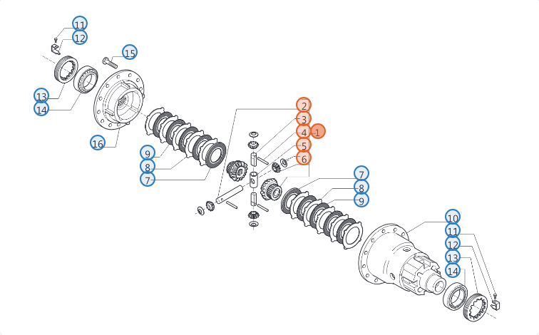

| CÓDIGO | PEÇA | SALDO | |
|---|---|---|---|
| ☐ | 66351 | KIT ENGR. DIFERENCIAL 📖 nº 1 | 2 |
| ☑ | 113883 | DISCO BLOQUEIO 📖 nº 7 | 14 |
| ☐ | 113880 | CONTRADISCO 📖 nº 8 | 40 |
| ☐ | 113879 | DISCO BLOQUEIO 📖 nº 9 | 0 |
| ☐ | 133150 | CAIXA DIFERENCIAL 📖 nº 10 | 1 |
| Nº | CÓDIGO | PEÇA |
|---|---|---|
| 6 | 115730 | ARRUELA ENCOSTO |
| 7 | 113883 | DISCO BLOQUEIO |
| 8 | 113880 | CONTRADISCO |
| 9 | 113879 | DISCO BLOQUEIO |